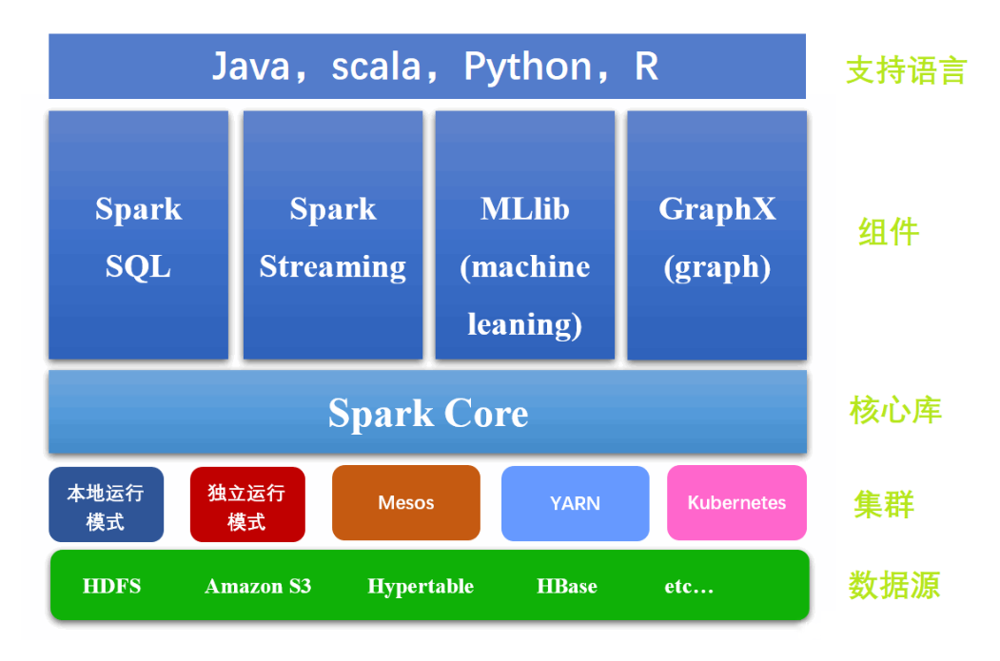
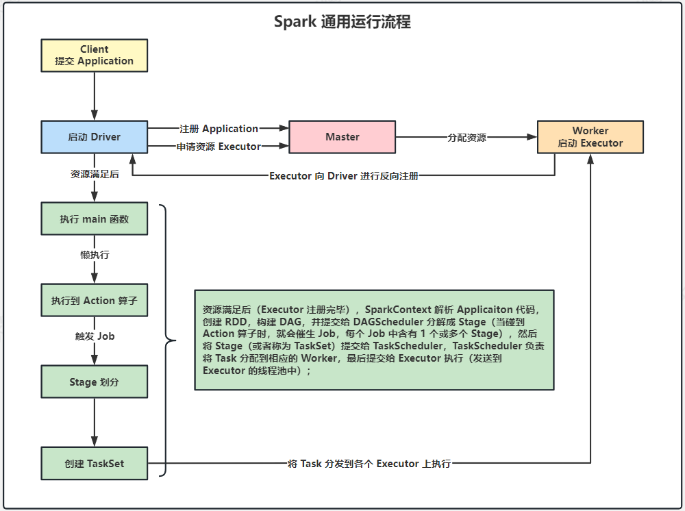
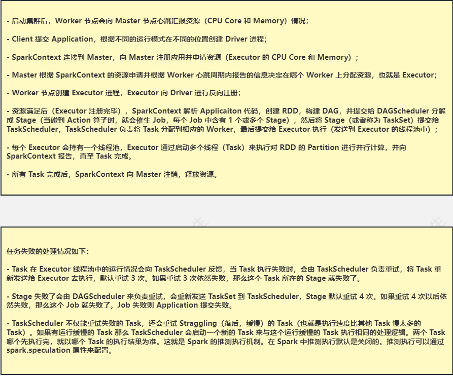
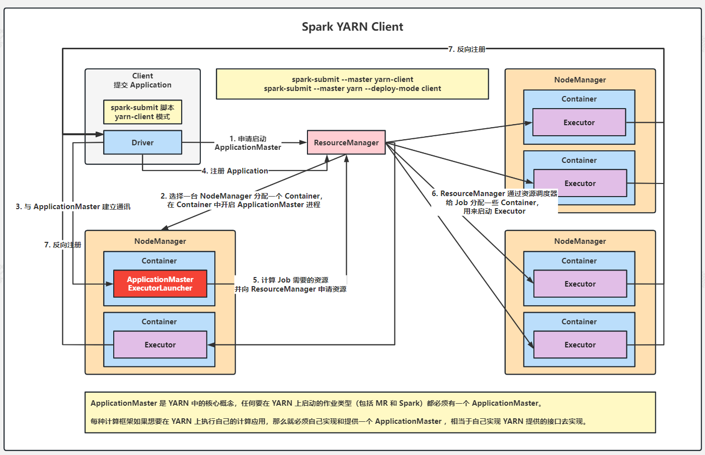
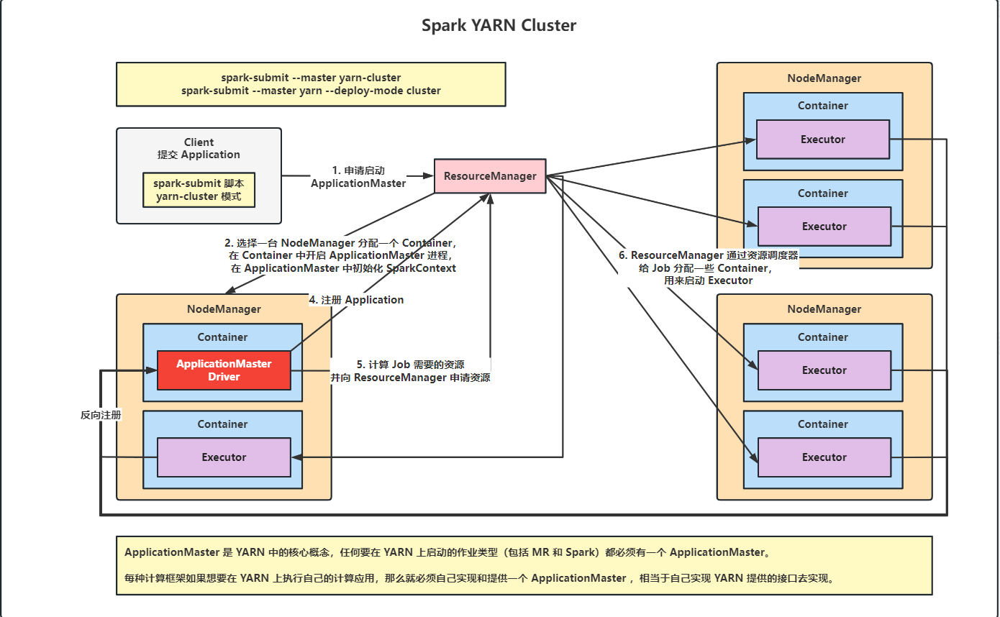
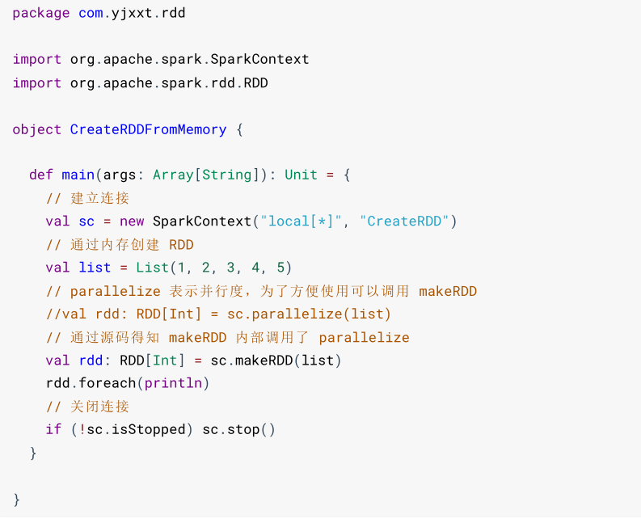
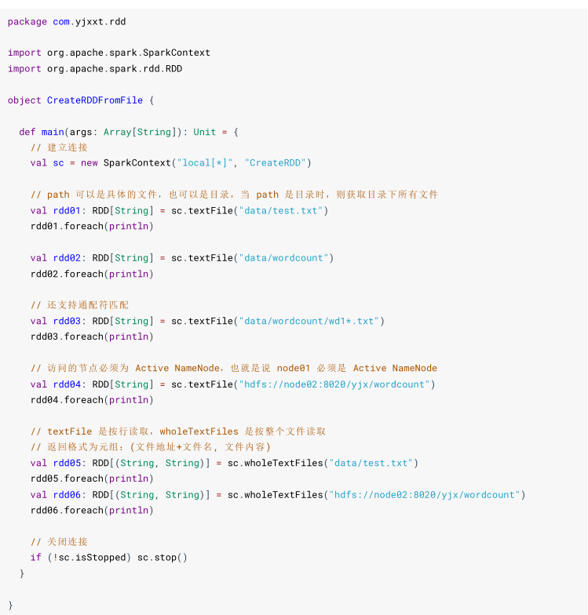
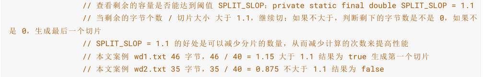
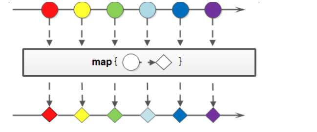

Spark #
Spark Core 3.3.2 #
概述 #
简介 #
Spark是一个快速、通用、可扩展的大数据处理引擎。Spark中Job的中间输出结果可以缓存在内存中，减少了磁盘交互，所以也被称为基于内存的分布式计算框架。
特点 #
- 运行速度快
基于内存处理数据，计算出的结果存在内存中。
-
易用性好
可以支持多种语言，还支持超过80种算法
-
通用性强
Spark 提供了统一的解决方案。Spark 可以用于批处理（Spark Core）、交互式查询（Spark SQL）、实时流处理（SparkStreaming）、机器学习（Spark MLlib）和图计算（GraphX）。
-
兼容性
Spark 可以非常方便地与其他的开源产品进行融合。
模块 #
Spark Core #
核心组件。最基础与最核心的功能。用于离线数据处理，批量计算。
Spark SQL #
用于结构化数据的处理，允许使用SQL或DataFrame API来查询数据。
Spark Streaming #
用于实时数据流处理，可以处理来自Kafka、Flume、Twitter等数据源的数据
Spark MLlib #
提供了常见的机器学习算法和实用程序，如分类、回归、聚类、协同过滤等。
Spark GraphX #
用于图形和图形并行计算，提供了图计算和图算法的实现。
Mesos #
Mesos 是一个集群管理器，与 YARN 功能类似，提供跨分布式应用或框架的资源隔离与共享，上面运行 Hadoop（一种类似 Spark 的分布式系统基础架构）、Hypertable（一种类似 Google 公司 Bigtable 的数据库）、Spark。Mesos 使用分布式应用程序协调服务 ZooKeeper 实现容错，同时利用基于 Linux 的容器隔离任务，支持不同的资源分配计划
YARN #
YARN（Yet Another Resource Negotiator）最初是为 Hadoop 生态设计的资源管理器，能在上面运行 Hadoop、Hive、Pig（Pig 是一种基于 Hadoop 平台的高级过程语言）、Spark 等应用框架。在 Spark 使用方面，YARN 与 Mesos 很大的不同是 Mesos 是 AMPLab 开发的资源管理器，对 Spark 支持力度很大，但国内主流使用仍是 YARN，主要是 YARN 对 Hadoop 生态的适用性更好。
Kubernetes #
一个开源的容器管理平台，用于自动化地管理和扩展应用程序的部署和运行。在Spark与Kubernetes的集成中，Kubernetes负责管理和扩展Spark应用程序的容器化部署。
运行模式 #
-
local：本地模式。所谓的 Local 模式，就是不需要其他任何节点资源就可以在本地执行 Spark 代码的环境，一般用于教学，调试，演示等。本地模式就是一个独立的进程，通过其内部的多个线程来模拟整个 Spark 运行时环境。
-
yarn：Hadoop 的资源调度框架，Spark 也可以基于 YARN 来计算（将 Spark 应用提交到 YARN 上运行）。Spark 客户端直接连接 YARN，不需要额外构建 Spark 集群，国内使用较多。Spark 中的各个角色运行在 YARN 的容器内部，并组成 Spark 集群环境。
总结 #

运行架构 #
通用执行流程 #
流程图：
流程步骤：
Yarn模式 #
Yarn Client #
流程图：
流程步骤：
Yarn Cluster #
流程图：
流程步骤：
提交参数 #
通用参数 #
- **–master ：**Spark 任务提交的模式，默认为本地模式。
- **–deploy-mode ：**Driver 程序运行的地方，Client 或者 Cluster，默认是 Client；
- –class：指定包含你的
main方法的类的全名。 - –jars ：逗号分隔的本地 JARS，Driver 和 Executor 依赖的第三方 Jar 包；
- **–conf ：**Spark 的配置属性；
- **–name ：**应用程序的名称；
- –files ：用逗号隔开的文件列表，会放置在每个 Executor 工作目录中；
- **–num-executors ：**一共启动的 Executor 数量，默认是 2 个。计算方式 = 每个节点的 Executor 数 * Work 节点数。执行器数量会影响作业的并行度和总体性能。
- **–executor-cores ：**每个 executor 使用的内核数，默认为 1，官方建议 2-5 个，这是影响执行器并行处理能力的关键因素。
- **–executor-memory：**executor 内存大小，默认 1G，对于作业的并行性和性能至关重要。
- –driver-cores： driver 使用内核数，默认为 1，这有助于控制驱动程序可以使用的计算资源。
- **–driver-memory：**driver 内存大小，默认 512M，这是控制驱动程序性能的重要参数，特别是在处理大数据集时。
核心编程 #
RDD #
RDD 是 Resilient Distributed Dataset 的缩写，意思为弹性分布式数据集（一种数据结构），是一个读取分区记录的集合，是 Spark 对需要处理的数据的基本抽象。
Spark 中的计算过程可以简单的抽象为对 RDD 的创建、转换和返回操作结果的过程：

疑问???
如何理解RDD是一个抽象的数据集，不存储数据?
个人理解:RDD存储的只是数据之间如何转换的指令,数据之间的依赖关系和数据的分区状态.
创建 RDD #
方式一:通过集合创建
方式二:通过文件创建


Partition #
集合的分区处理 #
关键公式:


个人解读:
每个分区通过计算获得的[start,end)左闭右包的区间的差值就是该区间的集合长度.
文件的分区处理 #
关键公式:

个人解读:
按理论是设置几个分区就有几个分区,但是文件分区是按照文件的字节大小来分配的,例如文件A是45个字节,文件B是36个字节,按照公式一个分区是40个字节大小,A大于40*1.1,所以A会进行切片,但是文件A的数据可能会受到损坏,所以 Hadoop 源码中又做了处理，如果不是最后一个切片，每个切片每次会读完当前行,多出来的字节会额外创建一个分区,所以文件A的数据会被分配到分区0和分区1中,文件B的数据会被分配到分区3中。
{无论设置了多少个分区,一个文件会默认占一个分区(文件为空不会占分区)}
算子 #
什么是算子? #
算子是一个函数空间到另一个函数空间的映射。广义的讲，对任何函数进行某一项操作都可以认为是一个算子.
RDD 根据数据处理方式的不同将算子分为单 Value 类型、双 Value 类型和 Key-Value 类型。
转换算子（单 Value） #
转换算子简单的理解就是：功能的补充与封装，将旧的 RDD 转换为 新的 RDD。
map #
将处理的数据逐条进行映射转换，将返回值构成新的 RDD。这里的转换可以是类型的转换，也可以是值的转换。
语法格式:
def map[U: ClassTag](f: T => U): RDD[U]
mapPartitions & mapPartitionsWithIndex #
mapPartitions 是以分区为单位进行数据转换操作，会将整个分区的数据加载到内存。处理完的数据不会立刻释放，因为存在引用关系，所以在内存较小，数据量较大的情况下，容易出现 OOM 内存溢出。
语法格式:
def mapPartitions[U: ClassTag](
f: Iterator[T] => Iterator[U],
preservesPartitioning: Boolean = false): RDD[U]
def mapPartitionsWithIndex[U: ClassTag](
f: (Int, Iterator[T]) => Iterator[U],
preservesPartitioning: Boolean = false): RDD[U]
flatMap #
扁平化映射可以理解为先 map，然后再 flatten，它也是将来使用最多的操作，也是必须要掌握的。
简单的理解就是首先将函数作用于集合中的每个元素，然后将结果展平，返回新的集合。